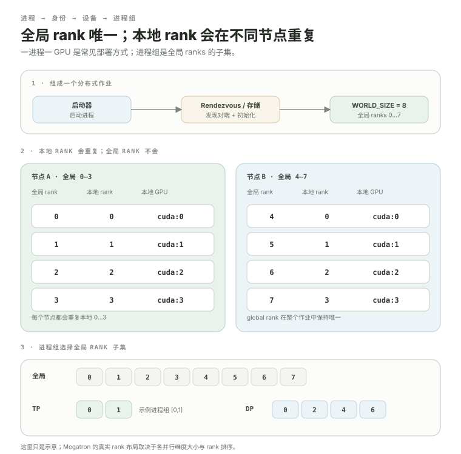

process（进程：独立运行程序并拥有自己状态的执行实例）、rank（进程编号：分布式作业中标识一个 process 的编号）与 process group（进程组：定义一组共同参与通信的 ranks）：多张 GPU 先怎么“认识彼此”？
上一模块已经知道：cuda:0 和 cuda:1 是不同设备，数据不会自动共享。现在第一次真正进入分布式。开始时别急着学 all-reduce；先回答更基础的问题：谁在控制 GPU 0？谁在控制 GPU 1？它们如何获得唯一 rank？哪些 process 属于同一个 process group？Megatron 后面的 TP、Pipeline Parallel 和 Data Parallel 通信，都建立在这套身份系统上。
- 区分 process、global rank（全局进程编号：在整个分布式作业中唯一标识一个 process）、
world_size（总进程数：当前分布式作业中参与协作的 process 数量）和 local rank（本地进程编号：标识 process 在当前机器上的本地序号）。 - 理解 one-process-per-GPU（每 GPU 一进程：每个 process 主要绑定一张 GPU 的常见部署方式）是部署模式，而不是分布式数学定义。
- 看懂
torchrun（PyTorch 分布式启动器：启动多个训练进程并为它们设置分布式身份信息）大致做了什么。 - 理解
init_process_group()为什么需要 peer discovery（对端发现：让分布式 processes 找到需要通信的其它参与者）和初始化。 - 解释 process group 为什么是 Megatron 创建不同并行通信域的基础。
- 知道 collective 调用如果不同 rank 对 process group 或调用顺序理解不一致，为什么容易卡住。
多 GPU 训练里，一个常见模式是启动多个 Python 进程，每个进程绑定一张 GPU。
假设一台机器有 4 张 GPU。常见 PyTorch / NCCL 训练部署会启动 4 个 Python process：
GPU 0GPU 1GPU 2GPU 3每个 process 都有自己的 Python 解释器、程序状态、tensor / model 对象。它们不能通过 Python 变量直接读取彼此的 GPU 显存；要同步 tensor，必须发生显式分布式通信。
model 和 rank 1 的 model 是各自进程里的对象。global rank 是这个 distributed world（分布式参与者集合：一次分布式作业中共同协作的全部 processes）里 process 的唯一编号。
world_size这个 distributed world 里一共有多少个 processes。单机 4 GPU 时全局 rank 和本地 rank 恰好都可能是 0、1、2、3，所以新手很容易把两者当成同一件事。多机以后这个错觉立刻消失。创建 subgroup 以后，还可能出现 group rank（组内编号：某个 process 在这个子进程组内部的编号）；它不应和 global rank 混为一谈。后面描述“TP group 包含哪些进程”时，课程会优先用 global ranks 表示成员集合；读具体接口时则要确认返回的是 global rank 还是组内 rank。
两台机器、每台 4 GPU：local rank 会重复，global rank 不会。
把 launcher（启动器：负责创建分布式进程并传入必要启动配置的组件）、rendezvous（会合初始化：让分布式 processes 发现彼此并建立通信所需信息）、process 身份、本地 GPU 绑定与 process groups 放在同一张图里：

这里 WORLD_SIZE=8。Node B 上的 local_rank=0 可以对应全局 rank 4，而不是 rank 0。local rank 只要求在本机语境里有意义，不是全局唯一 ID。
以后写“只让 rank 0 保存 checkpoint”时，应判断 global rank；而“这个 process 使用本机哪张 GPU”通常根据 local rank 做 device mapping（设备映射：决定某个 process 使用哪张本地 GPU 的对应关系）。
torchrun 会把同一个脚本启动成多个进程，并给它们分配分布式身份环境。
torchrun --standalone --nproc-per-node=4 hello_dist.py粗略看，它会启动 4 份 hello_dist.py。每个进程能从环境变量看到自己的身份，例如：
RANK=2
WORLD_SIZE=4
LOCAL_RANK=2
MASTER_ADDR=...
MASTER_PORT=...多节点时 launcher / rendezvous 配置会更复杂，但核心不变：每个 process 最终需要知道自己是谁、distributed world 中有多少其它参与者，以及去哪里完成初始化。
启动了多个进程还不够：它们还要加入同一个 distributed world。
PyTorch 分布式代码通常先初始化 default process group（默认进程组：初始化后默认包含主要参与 ranks 的通信组）。对 CUDA GPU 训练，NCCL 是常见 backend（后端：提供具体通信或执行实现的一层接口）：
import os
import torch
import torch.distributed as dist
local_rank = int(os.environ["LOCAL_RANK"])
torch.cuda.set_device(local_rank)
dist.init_process_group(backend="nccl")
rank = dist.get_rank()
world_size = dist.get_world_size()
x = torch.tensor([rank], device=f"cuda:{local_rank}")
print(f"rank={rank}, local_rank={local_rank}, x={x.item()}")
dist.destroy_process_group()torchrun 提供的环境变量可以让 init_process_group() 使用 environment-variable initialization（环境变量初始化：从 RANK、WORLD_SIZE 等环境变量读取进程组初始化信息）。初始化阶段需要各 process 彼此发现并建立 process group / backend 状态；这不是“每个 process 独自初始化完就算成功”。
为什么经常 one-process-per-GPU？因为身份和 device mapping 会变得非常清楚。
one-process-per-GPU 不是 CUDA 的硬限制。一个 process 可以看到多个 GPU，一个 GPU 也可能被多个 processes 使用。但大规模训练里 one-process-per-GPU 是非常常见、容易组合 NCCL 与 DDP（分布式数据并行：PyTorch 常用的数据并行训练方式，每个 rank 通常持有模型副本并同步 gradient）以及模型并行的部署方式。
不是所有 global ranks 每一次都必须一起通信。
default process group 可以包含全部 8 个 ranks。但你还可以创建 subgroup（子进程组：从更大的 process group 中选出部分 ranks 形成的通信域），只让其中一部分 ranks 参与某次通信。这正是 Megatron 组合多种并行方式的基础。
上图只是帮助理解“同一批 global ranks 可以按不同规则切成不同 process groups”，不是某个特定 Megatron 配置。真正的 TP / DP / Pipeline Parallel rank 布局取决于各并行规模和 rank 排列规则。
以后读 Megatron 源码看到 tensor/data/pipeline process groups时，脑中应该出现的是一组具体 global ranks，而不是一个抽象类名。
多进程初始化，本质上还需要一个“大家去哪里碰头”的机制。
现在不需要背具体 rendezvous 实现细节。先记住：分布式 processes 不是天然知道彼此；初始化系统必须解决 peer discovery 与一致的 membership（成员关系：定义当前哪些 processes 属于同一个分布式通信集合）。
最典型的新手噩梦：一个 rank 在等，另一个 rank 根本没来。
collective 通常要求 process group 里的相关 ranks 以兼容顺序参与。如果 rank 0 调用了某个 collective，而 rank 1 走了另一条 if 分支没有调用，rank 0 很可能一直等待 peer（对端：通信中的另一侧 process 或实例）。
每个 rank 现在走到哪一行？参与同一个 collective 的 ranks 是否一致？调用顺序、tensor shape / dtype、process group 是否一致？
下一课你会看到，“卡住”经常不是网络坏了，而是程序让不同 ranks 对通信约定产生了不同理解。
rank / 进程组是训练与推理系统共同的底层语言。
推理侧后面会遇到 P/D：即使 Prefill 与 Decode 被拆到不同实例，工作进程身份、device mapping 和通信域仍然必须先定义清楚。
下一课终于可以系统比较不同 collective 的输入和输出。届时每种通信都只问三件事：哪些 ranks 参加？开始时每人有什么 tensor？结束时每人得到什么？
如果 rank 身份还混乱，先别进collectives。
本课出现的缩写与术语
正文以自然中文为主，必要的源码缩写与专名可以保留；完整英文名集中放在这里，便于继续阅读英文文档与源码。
| 缩写 | English full name | 中文名 | 本课怎么理解 |
|---|---|---|---|
GPU | Graphics Processing Unit | 图形处理器 | 大模型训练与推理中执行 GEMM、Attention 等高并行计算的主要设备。 |
TP | Tensor Parallel | 张量并行 | 把单层内部的大矩阵/计算沿张量维度分到多个 ranks。 |
NCCL | NVIDIA Collective Communications Library | NVIDIA 集体通信库 | GPU 集群中常用的 collective / P2P 通信软件库。 |
P2P | Peer-to-Peer | 点对点通信 | 两个 peer/rank 之间直接发送和接收数据的通信模式。 |
CUDA | CUDA | NVIDIA GPU 并行计算平台 | 官方产品名，没有应当强行展开的现代英文全称；本课按 CUDA 平台/编程栈理解。 |
DDP | Distributed Data Parallel | 分布式数据并行 | PyTorch 常用的数据并行训练方式，每个 rank 通常持有模型副本并同步梯度。 |
DP | Data Parallel | 数据并行 | 不同 replica 处理不同数据，再同步训练状态；它主要切数据而不是切单层模型。 |
P/D | Prefill/Decode Disaggregation | Prefill/Decode 分离 | 把 Prefill 与 Decode 放到不同资源池/实例并协调 KV handoff。 |
Collectives：
all-reduce / all-gather / reduce-scatter 到底各自做什么？